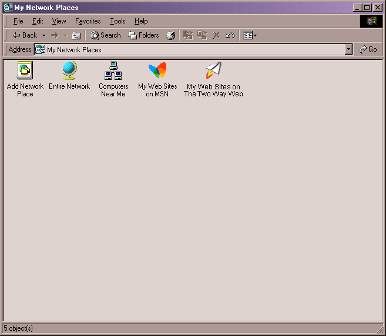
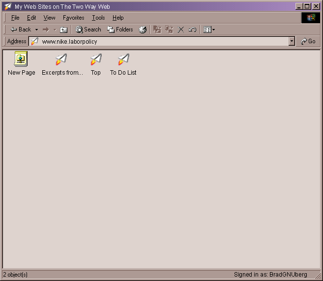

| | |
Table of Contents | Last | Next
Main Portions of Paper Airplane
"My Web Sites on the Two Way Web" in "My Network Places"
Paper Airplane deeply integrates with Windows by making the Two Way Web Sites that you are a member of appear as folders on your hard-drive. You can open these Two Way Web Site folders and use third-party applications, such as Macromedia Dreamweaver or Microsoft Word, to save and load pages right from your Two Way Web Sites.
These are located in the My Network Places folder:

Top-Level of My Network Places
Inside the My Web Sites on the Two Way Web folder are the actual Two Way Web Sites the current user is a member of:

My Web Sites on the Two Way Web
Navigate into these folders to see individual web pages on that Two Way Web Site:

Looking into a My Network Places Folder